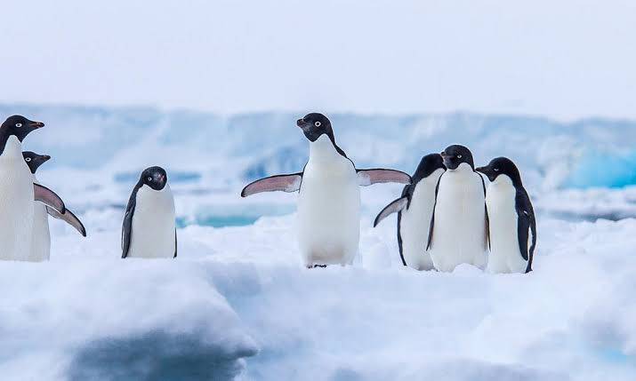

Penguin
Birds
Penguins are a group of aquatic flightless birds. They live almost exclusively in the Southern Hemisphere, with only one species, the Galápagos penguin, found north of the equator. Highly adapted for life in the water, penguins have countershaded dark and white plumage and flippers for swimming.
Eaten by: Sea lion
Family: Spheniscidae; Bonaparte, 1831
Scientific name: Spheniscidae
Class: Aves
Height: Emperor penguin: 1.1 – 1.3 m, Little penguin: 30 – 35 cm, Galapagos penguin: 49 – 53 cm
Lifespan: Emperor penguin: 20 years, Little penguin: 6 years
Penguin, (order Sphenisciformes), any of 18 species of flightless marine birds that live only in the Southern Hemisphere. The majority of the 18 species live not in Antarctica but rather between latitudes 45° and 60° S, where they breed on islands.
A few penguins inhabit temperate regions, and one, the Galapagos penguin (Spheniscus mendiculus), lives at the Equator.
The stocky, short-legged appearance of penguins has endeared them to people worldwide. They range from about 35 cm (14 inches) in height and approximately 1 kg (about 2 pounds) in weight in the blue, or fairy, penguin (Eudyptula minor) to 115 cm (45 inches)
and 25 to 40 kg (55 to 90 pounds) in the emperor penguin (Aptenodytes forsteri). Most are black on the back and white below, often with lines of black across the upper breast or spots of white on the head.
Colour is rare, being limited to red or yellow irises of the eye in some species; red beaks or feet in a few; yellow brow tufts in the three species of Eudyptes; and orange and yellow on the head, neck, and breast in the emperor and king (A. patagonica) penguins.
The total populations of some species, such as the emperor, are estimated in the hundreds of thousands, but most species of smaller penguins certainly run into the millions.
Immense island breeding colonies, some teeming with hundreds of thousands of nesting pairs, represent a large potential food resource, but the economic importance of penguins is negligible.
Nineteenth-century whalers and seal hunters visited some colonies for meat and eggs, and a penguin oil industry once took large numbers of the birds.
By the early 20th century, however, this exploitation was no longer profitable, and most colonies were left alone or actively protected.
Some species are now increasing in numbers, apparently as a result of the mid-20th century’s decimation of Antarctic whales, which compete with penguins for the krill (minute crustaceans) on which both feed.
Penguin populations, however, are highly vulnerable to changes in climate and ocean temperature, including recent global warming. Penguins also are very sensitive to depletion of local fish populations by humans.
Biology of Penguin
Living species and recent extinctions
The number of extant penguin species is debated. Depending on which authority is followed, penguin biodiversity varies between 17 and 20 living species, all in the subfamily Spheniscinae.
Some sources consider the white-flippered penguin a separate Eudyptula species, while others treat it as a subspecies of the little penguin.
the actual situation seems to be more complicated. Similarly, it is still unclear whether the royal penguin is merely a colour morph of the macaroni penguin. The status of the rockhopper penguins is also unclear.
Evolution
The evolutionary history of penguins is well-researched and represents a showcase of evolutionary biogeography. Although penguin bones of any one species vary much in size and few good specimens are known, the alpha taxonomy of many prehistoric forms still leaves much to be desired.
Some seminal articles about penguin prehistory have been published since 2005. the evolution of the living genera can be considered resolved by now.
The basal penguins lived around the time of the Cretaceous–Paleogene extinction event somewhere in the general area of (southern) New Zealand and Byrd Land, Antarctica.
Due to plate tectonics, these areas were at that time less than 1,500 kilometres (930 mi) apart rather than the 4,000 kilometres (2,500 mi) of today. The most recent common ancestor of penguins and their sister clade can be roughly dated to the
Campanian–Maastrichtian boundary, around 70–68 mya.
What can be said as certainly as possible in the absence of direct (i.e., fossil) evidence is that, by the end of the Cretaceous, the penguin lineage must have been evolutionarily well distinct, though much less so morphologically.
it is fairly likely that they were not yet entirely flightless at that time, as flightless birds have generally low resilience to the breakdown of trophic webs that follows the initial phase of mass extinctions because of their below-average dispersal capabilities (see also Flightless cormorant).[citation needed]
Geography
The geographical and temporal pattern or spheniscine evolution corresponds closely to two episodes of global cooling documented in the paleoclimatic record.
The emergence of the Subantarctic lineage at the end of the Bartonian corresponds with the onset of the slow period of cooling that eventually led to the ice ages some 35 million years later. With habitat on the Antarctic coasts declining, by the
Priabonian more hospitable conditions for most penguins existed in the Subantarctic regions rather than in Antarctica itself.
Notably, the cold Antarctic Circumpolar Current also started as a continuous circumpolar flow only around 30 mya, on the one hand
forcing the Antarctic cooling, and on the other facilitating the eastward expansion of Spheniscus to South America and eventually beyond.
Despite this, there is no fossil evidence to support the idea of crown radiation from the Antarctic continent in the Paleogene, although DNA study favors such a radiation.
Anatomy and physiology
Penguins are superbly adapted to aquatic life. Their wings have evolved to become flippers, useless for flight in the air. In the water, however, penguins are astonishingly agile. Penguins' swimming looks very similar to bird's flight in the air.
Within the smooth plumage a layer of air is preserved, ensuring buoyancy. The air layer also helps insulate the birds in cold waters. On land, penguins use their tails and wings to maintain balance for their upright stance.
All penguins are countershaded for camouflage – that is, they have black backs and wings with white fronts. A predator looking up from below (such as an orca or a leopard seal) has difficulty distinguishing between a white penguin belly and the reflective water surface. The dark plumage on their backs camouflages them from above.
Breeding
Penguins for the most part breed in large colonies, the exceptions being the yellow-eyed and Fiordland species; these colonies may range in size from as few as a 100 pairs for gentoo penguins, to several hundred thousand in the case of king, macaroni and chinstrap penguins.
Living in colonies results in a high level of social interaction between birds, which has led to a large repertoire of visual as well as vocal displays in all penguin species.
Agonistic displays are those intended to confront or drive off, or alternately appease and avoid conflict with, other individuals.
Penguins form monogamous pairs for a breeding season, though the rate the same pair recouples varies drastically. Most penguins lay two eggs in a clutch, although the two largest species, the emperor and the king penguins, lay only one.
With the exception of the emperor penguin, where the male does it all, all penguins share the incubation duties. These incubation shifts can last days and even weeks as one member of the pair feeds at sea.
Penguins and humans
Penguins have no special fear of humans, and will often approach groups of people. This is probably because penguins have no land predators in Antarctica or the nearby offshore islands.
Dogs preyed upon penguins while they were allowed in Antarctica during the age of early human exploration as sled dogs, but dogs have long since been banned from Antarctica.
Instead, adult penguins are at risk at sea from predators such as sharks, orcas, and leopard seals. Typically, penguins do not approach closer than around 9 feet (3 meters), at which point they appear to become nervous.[citation needed]
In June 2011, an Emperor penguin came ashore on New Zealand's Peka Peka Beach, 3200 km off course on its journey to Antarctica.
Nicknamed Happy Feet, after the movie of the same name, it was suffering from heat exhaustion and had to undergo a number of operations to remove objects like driftwood and sand from its stomach.
Happy Feet was a media sensation, with extensive coverage on TV and the web, including a live stream that had thousands of views and a visit from English actor Stephen Fry. Once he had recovered, Happy Feet was released back into the water south of New Zealand.